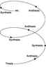
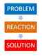

Daryush "Roosh" Valizadeh created ROK in October 2012. You can visit his blog at RooshV.com or follow him on Twitter and Facebook.


A term that kept coming up in my research on modern governments was “Hegelian Dialectic.” I spent some time studying it to understand not only what it was, but how it is being used by the ruling class to manipulate the public into fulfilling a pre-determined agenda.
Georg Wilhelm Friedrich Hegel
First described by Enlightenment German philosopher Georg Wilhelm Friedrich Hegel, the Hegelian Dialectic is a mechanism to arrive at a final truth or conclusion. Right now you probably use the Aristotelian method for arriving at truth, which is to observe all the facts of the situation and then make the most logical conclusion based from those observations. Hegel explained a process where truth is instead arrived through the friction and conflict between one force (the thesis) and its opposite (the antithesis). The final result from that clash, the synthesis, is the best conclusion.
In all likelihood, the synthesis is not the final and absolute truth. It becomes the new thesis where a new antithesis forms to oppose it. The conflict between them leads to a second synthesis. This process repeats until the final synthesis is revealed, which theoretically is absolute truth.

In plain terms, the Hegelian Dialectic is the battle of two extremes to get a result that is somewhere in the middle. That result will develop an opposing force of its own and the ensuing battle yields another result. The objective reality we have right now has incorporated within it all previous “battles” of thesis and antithesis since the beginning of time, meaning that—according to the theory—we are living in a progressive arc to absolute truth and world perfection.
Thesis: British and French power hegemony after World War 1
Anti-thesis: Hitler
Synthesis: USA hegemony
Thesis: Traditional conservatism
Anti-thesis: Marxism
Synthesis: Globalism
Thesis: USA government losing domestic power
Anti-thesis: 9/11
Synthesis: Patriot act, NSA spying
Thesis: Feminism
Anti-thesis: PUA, MRA, neomasculinity
Synthesis: ?
Hegel proposed his dialectic as a natural way of arriving at the truth, but had in mind that the nation itself was the vehicle to create new syntheses. Like most Enlightenment thinkers, he threw god away and made the nation-state god instead. The modern elite has taken this a step further by pre-determining a synthesis (a specific agenda) and then developing events that arrive at that synthesis through artificial means.
If the elite has a result they would like to have, whether it be increased authoritarian rule or a war that solidifies their power, all they have to do is devise an anti-thesis that will lead to the outcome they want. This is commonly done through false flag attacks, where the government of a nation attacks itself so that it can respond in the way that it had wanted to all along, because it’s only through that attack would citizens agree to the planned synthesis. False flag attacks are in fact a common way for governments to fulfill their goals.
Here are two Hegelian loops we may be currently living through:
Problem (thesis): Russia refuses to enter the New World Order
Reaction (anti-thesis): Destabilize Ukraine and Syria, forcing Russia to act aggressively
Solution (synthesis): Create pretext for removing Russian leadership and installing Western rulers,
Problem: Nationalism in Europe
Reaction: Allow millions of Afro-Islamists
Solution: Strengthening of United Nations and European Union to “protect” people from social unrest
People use the dialectic in their own lives when trying to solve problems:
Problem: Not receiving enough attention
Reaction: Invent drama, catastrophes, diseases
Solution: Receive attention from family, friends, strangers
What the ruling elite does, and have been doing for centuries, is create reactions which requires solutions they had wanted all along. The reaction (e.g. 9/11) puts citizens in a state of fear and anxiety that allows easily implementation of the solution without resistance. Would Americans have protested the Patriot Act more strongly if 9/11 had never occurred? They’d probably laugh at its proposal, just like how they laughed at George W. Bush’s attempts to privatize Social Security at the start of his second term.

One way you know the government is using the Hegelian dialectic to fulfill their agenda is when they have a ready-made solution immediately after an event, all without public debate. This is most commonly seen in the United States with gun control, where after every mass shooting, calls for limiting sales of guns are made by the media and government. Strict gun control or outright confiscation is a pre-determined solution in the USA that will certainly be attempted in the future.
From Nero burning Rome to Hitler burning the Reichstag, power-mad leaders across the decades have manufactured crises in order to present the public with situations where their Police State solutions “make sense”.
“Give up your rights — it’s for your safety…”
[…]
Every major financial crisis America has experienced in her history has followed this same Hegelian dialectic pattern with the outcome being another incremental step toward world financial domination by an elite few. [Source]
A related use of the Hegelian dialectic is to create the appearance of healthy governmental opposition. We see this in the United States where both Democrats and Republicans are two heads of the same body. They create a theater show for the public that two opposing forces are debating and compromising to serve the interests of the nation when they are actually both controlled by the same globalists who donate money to both parties. The cuckservative phenomenon has shown that mainstream conservatives are nearly identical to the left besides a few hot button issues like abortion and religion (they have even converged on homosexual marriage).
In the West the choice is basically between a controlled ‘left-oriented’ information, and a controlled ‘right-oriented’ information. The conflict between the two CONTROLLED groups keeps an apparent informational conflict alive. Unwelcome facts that fall into either camp are conveniently forgotten. Books that fall into either camp can be effectively neutralized because they will incur the wrath of both ‘right’ and ‘left’. The faster the cattle run, the faster the treadmill takes them to nowhere.
[…]
The Hegelian dialectic is being employed to secure and sustain absolute world power and authority to an elite. [Source]
[…]
…the Hegelian dialectic requires a thesis and an antithesis, a pro and a con. Are these not absolutes? Is not the very concept of left and right, east and west, black and white, etc., required by the dialectic a confirmation of absolutism itself? [Source]
A reasonably titled policy like “sustainable development” is part of a dialectic to control human behavior and reproduction
It’s effortless to rule when you have citizens programmed to demand the changes that match your agenda:
The disturbing aspect to Alinsky’s approach for “radical social change” is his belief in the Marxist-Leninist method of always keeping the masses demoralized so they will demand change, or even insist the system be abolished altogether. [Source]
Many of us are already aware of what the elite is doing to society in order to maintain control. The Hegelian dialectic allows us to see how they are doing it, adding an important piece of the puzzle to more easily recognize their authoritarian schemes.
Whenever a crisis occurs that politicians, governments, world organizations like the United Nations, IMF, World Bank, US Fed, or countless other quasi-governmental entities have a solution for, three things are certain:
1. Their solution will not solve the original problem.
2. The problem was possibly created themselves in order to introduce their desired “solution.”
3. The engineered process of Problem-Reaction-Solution is reducing your liberty and making you more dependent on the state.
After violent catastrophes and global events, think for a moment to see what their real agenda is based on the reaction by those in power, and consider resisting if you have the strength to do so. To be on the safe side, you can assume that just about any non-local solution by the government is part of a plan to hurt you, and that it will have the opposite stated effect if allowed to be implemented.
Read Next: How America’s New Nobility Has Forgotten Its Obligation To The Country